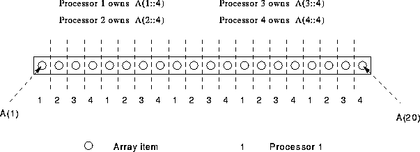
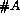

Deal out elements of an array to processors in a round robin fashion
PROGRAM Round_Robin
REAL, DIMENSION(20) :: A
!HPF$ PROCESSORS, DIMENSION(4) :: P
!HPF$ DISTRIBUTE (CYCLIC) ONTO P :: A
....

Figure 19: Visualisation of CYCLIC Distribution
If an array, A has  elements and is mapped onto  processors
each processor gets (a maximum) total of
separate elements. See Figure
19.
processors
each processor gets (a maximum) total of
separate elements. See Figure
19.
As in the previous section, each processor gets five elements, but this time a different set of elements are received. The elements are dished out in a round-robin fashion starting from processor 1. The diagram indicates the elements that each processor is given.
The formula for the maximum number of elements that a processor can receive is the same as for BLOCK distribution.